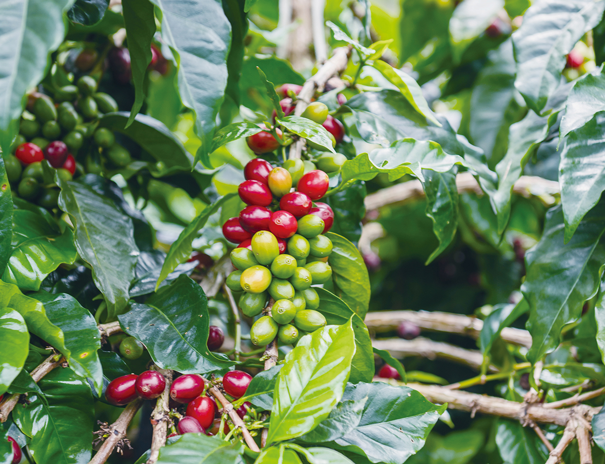
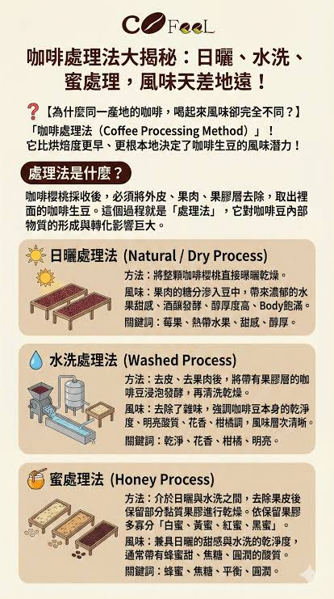
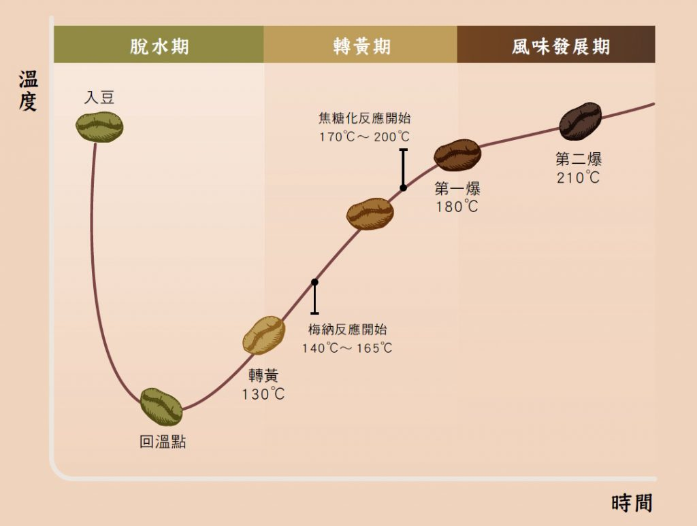
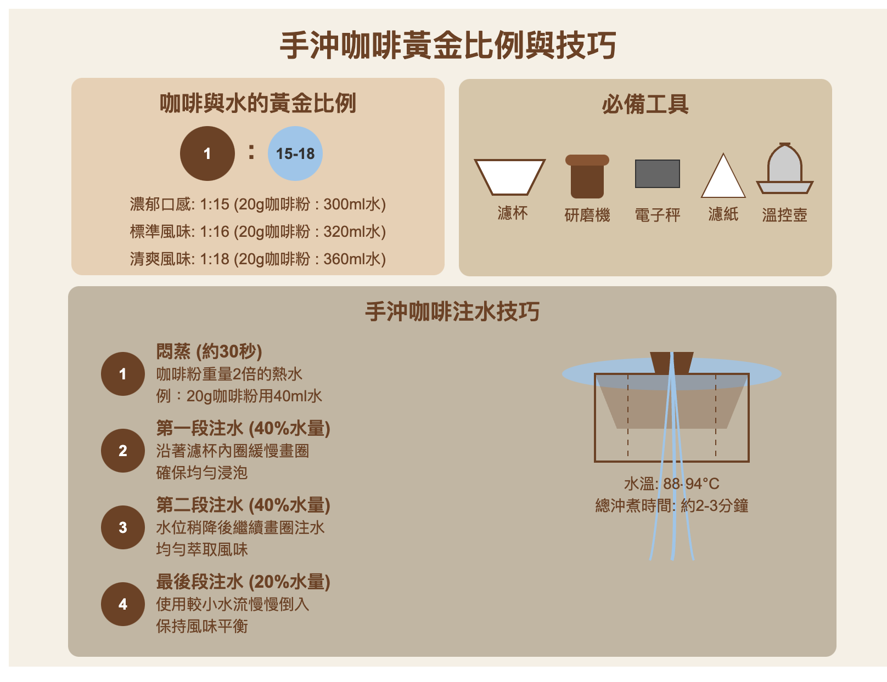

對強日照耐受性較低；適合火山灰土壤。
較需遮陰一顆咖啡，經過五個決策節點
種植
環境 × 品種
環境 × 品種
處理
果實 × 乾燥
果實 × 乾燥
烘焙
熱量 × 曲線
熱量 × 曲線
沖煮
研磨 × 萃取
研磨 × 萃取
杯測
感官 × 回饋
感官 × 回饋
品質回饋：杯測結果可修正處理、烘焙與栽種決策。
種植、處理、烘焙、沖煮與杯測的完整旅程

品質回饋：杯測結果可修正處理、烘焙與栽種決策。
來源：coffee-cultivation-tbrs.md；台灣栽培建議不應直接視為所有產區通則。
對強日照耐受性較低；適合火山灰土壤。
較需遮陰適合含豐富腐植質的土壤；現有來源未提供完整風味細節。
需補實證種子繁殖為主，新鮮種子約 5–8 週發芽；輪流更新主枝。
定植 12–3 月
三法乾燥後生豆含水率約 11–13%；實際值需依標準校正。
較少果肉留存
更接近水洗較少至中量果肉
明亮 × 甜感中量果肉留存
平衡型較多果肉留存
更接近日曬黑／紅／黃／白的精確比例在來源中未給；名稱因產區作法而異。
脫水 → 焦糖化 / 梅納反應 → 一爆 → 二爆 → 快速冷卻

影響熟透度與餘韻。過短可能出現青草、豆漿味與澀感。
梅納反應影響厚實度與甜度；觀察豆表由白轉黃。
平衡酸、甜與香氣；爆裂後的時間與升溫決定風味。
約 2–3 分鐘將豆溫降至 170°C；延遲會影響品質。
曲線案例來自特定烘焙機與批次，不是通用配方。

高壓萃取；來源提供 90.5–96°C、8.5–9.5 bar、20–30 秒作為概述。
濃縮 × 高壓賽風利用虹吸與半真空；摩卡利用蒸氣壓力與蒸餾式流動。
虹吸 × 蒸氣重力、濾紙與注水方式控制接觸時間及均勻度。
重力 × 濾液來源參考：粉水比 1:19–1:21、93°C、磨粉後 15 分鐘內測乾香。
1881/1884 傳入；日治試種；1933 銹病；戰後復甦；2000 年後精品化。
花香、水果、發酵、糖香、堅果、草本、香料；以三大感官描述。
特選、精選、優選；結合溯源、智慧挑豆與數位杯測評鑑。
完成主鏈條：栽培 → 處理 → 烘焙 → 沖煮 → 品評
10
原始來源
38
Wiki 頁面
無斷鏈 / 無孤兒頁